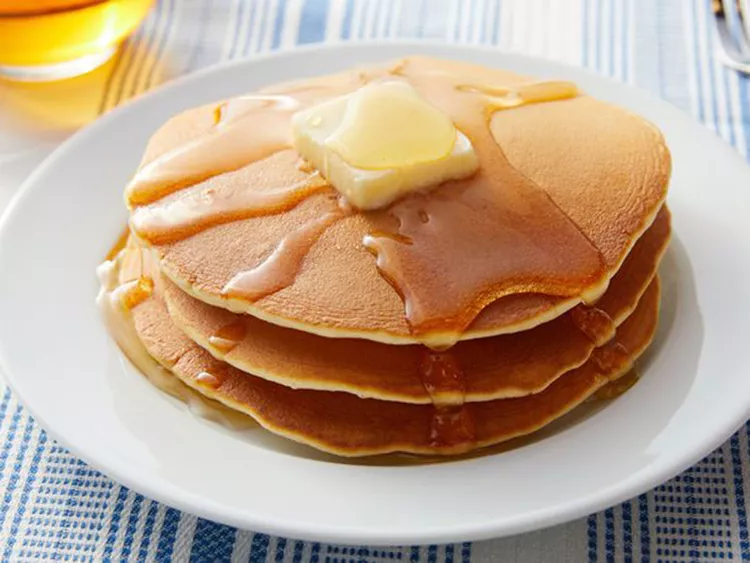

Pancake Recipe

General panacake recipe that you can follow with general ingredients for sure.
Ingredients:
- Flour
- Sugar
- Baking Powder
- Milk
- Eggs
- Oil
Steps of the Recipe:
- Gather the ingredients.
- Combine flour, sugar, baking powder, and salt in a large bowl; make a well in the center. Pour in milk, oil, and egg; mix until smooth.
- Heat a lightly oiled griddle or frying pan over medium-high heat. Pour or scoop about ¼ cup batter per pancake onto the griddle; cook until bubbles form and the edges are dry, 1 to 2 minutes. Flip; cook until browned on the other side. Repeat with remaining batter.
- Serve hot and enjoy!
Homepage